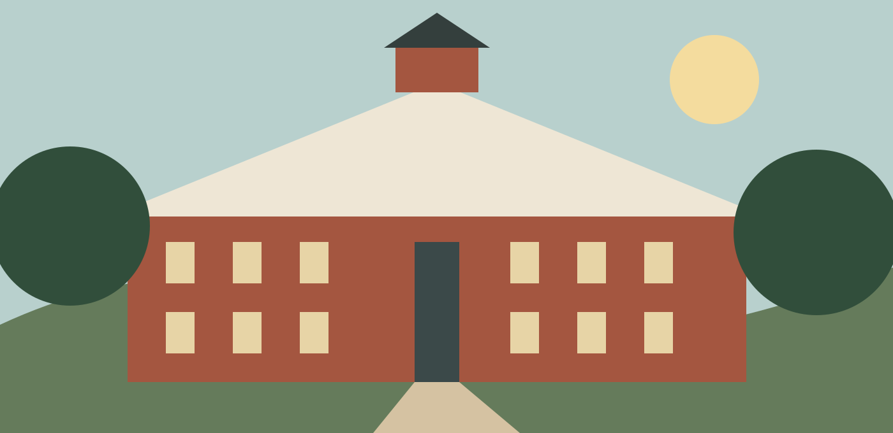
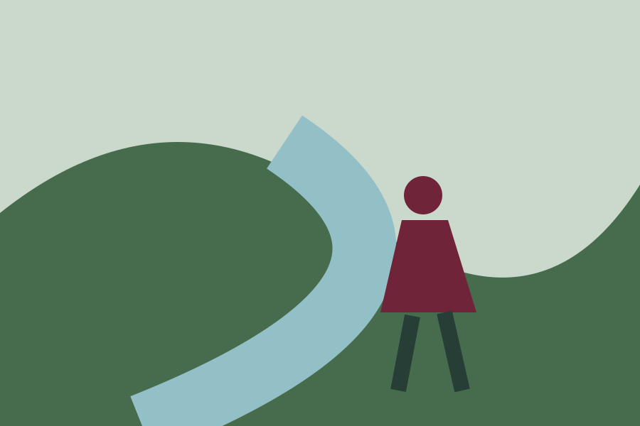

Discovery
Listening to the stream
A student field notebook opens a conversation about local waterways.
Read the story →
A world of possibilities
A liberal-arts education that moves with you.
Redbrook College • A fictional learning community
Bring your interests together in a place where conversation turns into discovery, and discovery becomes work that matters.
Explore your possibilities
Known. Challenged. Supported.
Read closely, test an idea, and work alongside faculty who make room for your perspective. Learning crosses the classroom door.
Explore biology →Campus paths connect a historic town center, green spaces and places to make art. Find a setting for your next chapter.
Get to know Redbrook →Discovery
A student field notebook opens a conversation about local waterways.
Read the story →Community
Students share projects at the autumn community gathering.
See the gathering →Creativity
An open studio invites the campus to try a new material.
Explore the studio →Curiosity grows when different experiences meet. We make space for listening, participation and thoughtful disagreement.
Discover our community →